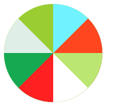

对于CSS的练习介绍如何绘制八等分的圆。
#
简介
对于CSS的练习介绍如何绘制八等分的圆。
问题1 主要思路
这个地方的主要思路是将一个八等分的圆分成两部分。左边和右边的圆分别用半圆旋转而得。
1 注意：每个半圆最后要用外面的外包矩形切一下 详见#lfet #right
2 右边旋转的圆顺序不一样后面的可能会遮挡前面的要么顺序要对，要么使用z-index
问题2 重点代码
1 半圆和圆
1
2
3
4
5
6
7
8
9
10
11
12
13
14
15
16
17
18
19
| .circle-left{
width: 100px;height: 200px;
border-radius: 0px 100px 100px 0px;
position: absolute;
right: 0;
transform-origin: 0 50%;
}
.circle-right{
width: 100px;height: 200px;
border-radius: 100px 0px 0px 100px ;
position: absolute;
right: 0;
transform-origin: 100% 50%;
}
#circle0{
width: 200px;height: 200px;
border-radius: 100px;background-color: yellowgreen;
position: relative;
}
|
上面采用的是border-radius实现圆和半圆
2 将半圆切整齐
1
2
3
4
5
6
7
8
| #left{
clip: rect(0px 100px 200px 0px);
position: absolute;
right: 0px;
width: 100px;
height: 200px;
overflow: hidden;
}
|
使用clip属性将其切整齐
clip只有一种值rect(a,b,c,d)
代码：
1
2
3
4
5
6
7
8
9
10
11
12
13
14
15
16
17
18
19
20
21
22
23
24
25
26
27
28
29
30
31
32
33
34
35
36
37
38
39
40
41
42
43
44
45
46
47
48
49
50
51
52
53
54
55
56
57
58
59
60
61
62
63
64
65
66
67
68
69
70
71
72
73
74
75
76
77
78
79
80
81
82
83
84
85
86
87
88
89
90
91
92
93
94
| <!DOCTYPE html>
<html>
<head>
<title>CSS等分圆</title>
<meta charset="utf-8">
<style type="text/css">
.circle-left{
width: 100px;height: 200px;
border-radius: 0px 100px 100px 0px;
position: absolute;
right: 0;
transform-origin: 0 50%;
}
.circle-right{
width: 100px;height: 200px;
border-radius: 100px 0px 0px 100px ;
position: absolute;
right: 0;
transform-origin: 100% 50%;
}
#circle0{
width: 200px;height: 200px;
border-radius: 100px;background-color: yellowgreen;
position: relative;
}
#circle2{
background-color: #70f3ff;
}
#circle3{
background-color: #ff461f;
transform: rotate(45deg);
}
#circle4{
background-color: #bce672;
transform: rotate(90deg);
}
#circle5{
background-color: #ffffff;
transform: rotate(135deg);
}
#circle6{
background-color: #3b2e7e;
transform: rotate(180deg);
}
#circle7{
background-color: #ff2121;
transform: rotate(225deg);
}
#circle8{
background-color: #16a951;
transform: rotate(270deg);
}
#circle9{
background-color: #e0eee8;
transform: rotate(315deg);
}
#left{
clip: rect(0px 100px 200px 0px);
position: absolute;
right: 0px;
width: 100px;
height: 200px;
overflow: hidden;
}
#right{
clip: rect(0px 100px 200px 0px);
position: absolute;
left: 0px;
width: 100px;
height: 200px;
overflow: hidden;
}
</style>
</head>
<body>
<div id="circle0">
<div id="left">
<div class="circle-left" id="circle2"></div>
<div class="circle-left" id="circle3"></div>
<div class="circle-left" id="circle4"></div>
<div class="circle-left" id="circle5"></div>
</div>
<div id="right">
<div class="circle-right" id="circle9"></div>
<div class="circle-right" id="circle8"></div>
<div class="circle-right" id="circle7"></div>
<div class="circle-right" id="circle6"></div>
</div>
</div>
</body>
</html>
|
截图
